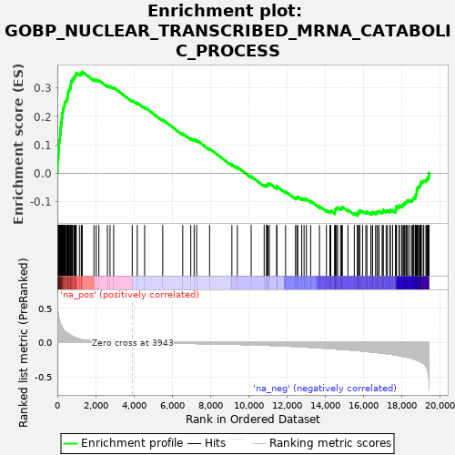
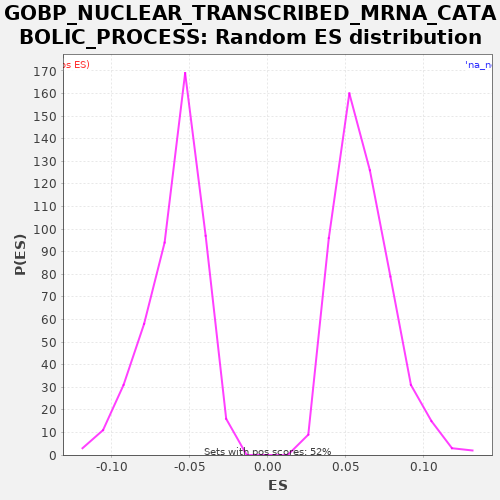

| | | Dataset | X_enriched_genes copy |
| Phenotype | NoPhenotypeAvailable |
| Upregulated in class | na_pos |
| GeneSet | GOBP_NUCLEAR_TRANSCRIBED_MRNA_CATABOLIC_PROCESS |
| Enrichment Score (ES) | 0.3574707 |
| Normalized Enrichment Score (NES) | 5.833914 |
| Nominal p-value | 0.0 |
| FDR q-value | 0.0 |
| FWER p-Value | 0.0 |
Table: GSEA Results Summary

Fig 1: Enrichment plot: GOBP_NUCLEAR_TRANSCRIBED_MRNA_CATABOLIC_PROCESS
Profile of the Running ES Score & Positions of GeneSet Members on the Rank Ordered List
| SYMBOL | RANK IN GENE LIST | RANK METRIC SCORE | RUNNING ES | CORE ENRICHMENT | | 1 | RPL8 | 3 | 0.622 | 0.0048 | Yes |
| 2 | RPL15 | 11 | 0.529 | 0.0094 | Yes |
| 3 | RPL11 | 15 | 0.501 | 0.0142 | Yes |
| 4 | RPL7A | 16 | 0.497 | 0.0191 | Yes |
| 5 | RPL18 | 18 | 0.496 | 0.0240 | Yes |
| 6 | RPS9 | 19 | 0.496 | 0.0290 | Yes |
| 7 | RPL13 | 20 | 0.494 | 0.0339 | Yes |
| 8 | RPS2 | 23 | 0.474 | 0.0388 | Yes |
| 9 | RPL27A | 29 | 0.460 | 0.0435 | Yes |
| 10 | RPL10 | 41 | 0.427 | 0.0478 | Yes |
| 11 | RPL14 | 48 | 0.412 | 0.0525 | Yes |
| 12 | RPS4X | 53 | 0.407 | 0.0572 | Yes |
| 13 | RPL3 | 54 | 0.406 | 0.0622 | Yes |
| 14 | RPL7 | 58 | 0.388 | 0.0670 | Yes |
| 15 | RPS8 | 60 | 0.382 | 0.0719 | Yes |
| 16 | RPL29 | 66 | 0.379 | 0.0766 | Yes |
| 17 | RPS5 | 72 | 0.372 | 0.0812 | Yes |
| 18 | RPL35 | 79 | 0.368 | 0.0859 | Yes |
| 19 | RPS3 | 82 | 0.366 | 0.0907 | Yes |
| 20 | RPL6 | 87 | 0.364 | 0.0955 | Yes |
| 21 | RPS14 | 88 | 0.363 | 0.1004 | Yes |
| 22 | RPSA | 93 | 0.357 | 0.1052 | Yes |
| 23 | RPL19 | 105 | 0.335 | 0.1095 | Yes |
| 24 | RPL9 | 108 | 0.332 | 0.1144 | Yes |
| 25 | RPS15 | 110 | 0.330 | 0.1193 | Yes |
| 26 | RPL26 | 136 | 0.298 | 0.1229 | Yes |
| 27 | RPS16 | 141 | 0.294 | 0.1277 | Yes |
| 28 | EXOSC8 | 142 | 0.294 | 0.1326 | Yes |
| 29 | RPS23 | 152 | 0.282 | 0.1371 | Yes |
| 30 | RPS27A | 158 | 0.277 | 0.1418 | Yes |
| 31 | RPL12 | 171 | 0.266 | 0.1461 | Yes |
| 32 | RPL28 | 173 | 0.265 | 0.1510 | Yes |
| 33 | RPL10A | 175 | 0.264 | 0.1559 | Yes |
| 34 | RPL36 | 180 | 0.260 | 0.1607 | Yes |
| 35 | RPL4 | 186 | 0.257 | 0.1654 | Yes |
| 36 | RPL17 | 199 | 0.249 | 0.1697 | Yes |
| 37 | RPLP0 | 205 | 0.247 | 0.1744 | Yes |
| 38 | RBM8A | 208 | 0.245 | 0.1792 | Yes |
| 39 | RPL24 | 226 | 0.236 | 0.1833 | Yes |
| 40 | RPL5 | 229 | 0.236 | 0.1882 | Yes |
| 41 | EIF3E | 234 | 0.232 | 0.1929 | Yes |
| 42 | RPS18 | 240 | 0.229 | 0.1976 | Yes |
| 43 | LSM4 | 254 | 0.220 | 0.2019 | Yes |
| 44 | RPL18A | 263 | 0.215 | 0.2064 | Yes |
| 45 | RPL13A | 265 | 0.214 | 0.2113 | Yes |
| 46 | RPS13 | 280 | 0.204 | 0.2155 | Yes |
| 47 | UBA52 | 297 | 0.195 | 0.2196 | Yes |
| 48 | RPS26 | 311 | 0.190 | 0.2239 | Yes |
| 49 | RPS25 | 321 | 0.187 | 0.2284 | Yes |
| 50 | RPL23 | 333 | 0.181 | 0.2328 | Yes |
| 51 | RPL21 | 360 | 0.171 | 0.2364 | Yes |
| 52 | RPL39 | 379 | 0.166 | 0.2404 | Yes |
| 53 | RPL32 | 383 | 0.164 | 0.2452 | Yes |
| 54 | RPS7 | 393 | 0.159 | 0.2497 | Yes |
| 55 | LSM7 | 421 | 0.154 | 0.2532 | Yes |
| 56 | DCPS | 464 | 0.144 | 0.2560 | Yes |
| 57 | RPL30 | 508 | 0.137 | 0.2587 | Yes |
| 58 | EXOSC7 | 514 | 0.136 | 0.2634 | Yes |
| 59 | RPS24 | 527 | 0.134 | 0.2677 | Yes |
| 60 | EXOSC4 | 530 | 0.133 | 0.2726 | Yes |
| 61 | RPS10 | 555 | 0.128 | 0.2763 | Yes |
| 62 | WDR61 | 565 | 0.127 | 0.2808 | Yes |
| 63 | RPL34 | 569 | 0.126 | 0.2855 | Yes |
| 64 | RPL22 | 588 | 0.122 | 0.2896 | Yes |
| 65 | RPS12 | 596 | 0.120 | 0.2941 | Yes |
| 66 | RPS15A | 651 | 0.110 | 0.2963 | Yes |
| 67 | RPL35A | 677 | 0.106 | 0.2999 | Yes |
| 68 | RPS19 | 685 | 0.105 | 0.3045 | Yes |
| 69 | RPS20 | 689 | 0.105 | 0.3093 | Yes |
| 70 | EXOSC5 | 706 | 0.102 | 0.3134 | Yes |
| 71 | RPL37A | 714 | 0.101 | 0.3180 | Yes |
| 72 | MRTO4 | 718 | 0.099 | 0.3228 | Yes |
| 73 | SSB | 759 | 0.094 | 0.3257 | Yes |
| 74 | RPS28 | 786 | 0.090 | 0.3293 | Yes |
| 75 | RPLP2 | 798 | 0.088 | 0.3337 | Yes |
| 76 | LSM3 | 866 | 0.079 | 0.3351 | Yes |
| 77 | POLR2G | 877 | 0.078 | 0.3396 | Yes |
| 78 | RPL36A | 929 | 0.070 | 0.3419 | Yes |
| 79 | RPL41 | 958 | 0.068 | 0.3454 | Yes |
| 80 | RPS17 | 960 | 0.068 | 0.3503 | Yes |
| 81 | RPL31 | 990 | 0.065 | 0.3537 | Yes |
| 82 | EIF4A3 | 1155 | 0.050 | 0.3502 | Yes |
| 83 | RPL37 | 1253 | 0.043 | 0.3501 | Yes |
| 84 | DHX34 | 1273 | 0.042 | 0.3540 | Yes |
| 85 | RPS11 | 1303 | 0.040 | 0.3575 | Yes |
| 86 | RPL27 | 1916 | 0.020 | 0.3306 | No |
| 87 | MAGOH | 2034 | 0.018 | 0.3295 | No |
| 88 | EXOSC9 | 2174 | 0.016 | 0.3272 | No |
| 89 | RPS29 | 2623 | 0.010 | 0.3089 | No |
| 90 | RPS21 | 2758 | 0.009 | 0.3069 | No |
| 91 | PNLDC1 | 2948 | 0.007 | 0.3020 | No |
| 92 | HBS1L | 3918 | 0.000 | 0.2567 | No |
| 93 | PELO | 4180 | -0.001 | 0.2480 | No |
| 94 | PATL2 | 4568 | -0.003 | 0.2329 | No |
| 95 | RPS27 | 5514 | -0.008 | 0.1888 | No |
| 96 | CNOT8 | 6562 | -0.012 | 0.1393 | No |
| 97 | NANOS3 | 6981 | -0.015 | 0.1226 | No |
| 98 | NCBP2 | 7157 | -0.015 | 0.1184 | No |
| 99 | RPLP1 | 7288 | -0.016 | 0.1166 | No |
| 100 | MTPAP | 7966 | -0.019 | 0.0864 | No |
| 101 | MLH1 | 9133 | -0.026 | 0.0308 | No |
| 102 | RPL38 | 9420 | -0.028 | 0.0209 | No |
| 103 | DCP1B | 10142 | -0.033 | -0.0116 | No |
| 104 | NBDY | 10821 | -0.039 | -0.0419 | No |
| 105 | SKIV2L | 10940 | -0.040 | -0.0431 | No |
| 106 | HELZ2 | 10984 | -0.041 | -0.0404 | No |
| 107 | LSM2 | 11024 | -0.041 | -0.0374 | No |
| 108 | RPS6 | 11093 | -0.042 | -0.0360 | No |
| 109 | NT5C3B | 11480 | -0.046 | -0.0511 | No |
| 110 | DIS3L2 | 11482 | -0.046 | -0.0462 | No |
| 111 | LSM6 | 11943 | -0.052 | -0.0652 | No |
| 112 | EXOSC1 | 12460 | -0.059 | -0.0870 | No |
| 113 | TENT2 | 12533 | -0.060 | -0.0858 | No |
| 114 | GSPT2 | 12579 | -0.061 | -0.0832 | No |
| 115 | EXOSC3 | 12787 | -0.064 | -0.0890 | No |
| 116 | DXO | 12909 | -0.065 | -0.0903 | No |
| 117 | ZFP36L1 | 13031 | -0.067 | -0.0917 | No |
| 118 | LSM5 | 13253 | -0.071 | -0.0982 | No |
| 119 | MAGOHB | 13713 | -0.079 | -0.1171 | No |
| 120 | PDE12 | 14080 | -0.085 | -0.1311 | No |
| 121 | EDC4 | 14261 | -0.089 | -0.1355 | No |
| 122 | CPEB3 | 14306 | -0.090 | -0.1329 | No |
| 123 | PPP2CA | 14519 | -0.094 | -0.1389 | No |
| 124 | NOCT | 14522 | -0.094 | -0.1341 | No |
| 125 | PAN2 | 14523 | -0.094 | -0.1291 | No |
| 126 | UPF3A | 14560 | -0.095 | -0.1261 | No |
| 127 | POLR2D | 14605 | -0.096 | -0.1234 | No |
| 128 | DCP1A | 14665 | -0.097 | -0.1215 | No |
| 129 | ZC3H12A | 14821 | -0.100 | -0.1246 | No |
| 130 | CNOT10 | 14877 | -0.101 | -0.1225 | No |
| 131 | NANOS1 | 14914 | -0.102 | -0.1194 | No |
| 132 | CNOT11 | 15206 | -0.107 | -0.1296 | No |
| 133 | AGO1 | 15537 | -0.115 | -0.1418 | No |
| 134 | XRN2 | 15703 | -0.119 | -0.1454 | No |
| 135 | PAN3 | 15724 | -0.120 | -0.1415 | No |
| 136 | CNOT2 | 15744 | -0.120 | -0.1375 | No |
| 137 | PCID2 | 15814 | -0.121 | -0.1362 | No |
| 138 | NBAS | 15817 | -0.121 | -0.1313 | No |
| 139 | PPP2R1A | 15967 | -0.125 | -0.1341 | No |
| 140 | PYM1 | 16141 | -0.130 | -0.1382 | No |
| 141 | SECISBP2 | 16196 | -0.131 | -0.1360 | No |
| 142 | CTIF | 16401 | -0.137 | -0.1417 | No |
| 143 | EDC3 | 16487 | -0.139 | -0.1411 | No |
| 144 | SMG8 | 16493 | -0.139 | -0.1364 | No |
| 145 | CNOT4 | 16650 | -0.145 | -0.1396 | No |
| 146 | CNOT9 | 16727 | -0.147 | -0.1386 | No |
| 147 | SMG9 | 16749 | -0.148 | -0.1347 | No |
| 148 | GSPT1 | 16833 | -0.150 | -0.1341 | No |
| 149 | EXOSC2 | 16995 | -0.155 | -0.1375 | No |
| 150 | DCP2 | 17044 | -0.157 | -0.1350 | No |
| 151 | RNPS1 | 17046 | -0.158 | -0.1301 | No |
| 152 | CNOT7 | 17205 | -0.163 | -0.1334 | No |
| 153 | PNRC2 | 17274 | -0.165 | -0.1320 | No |
| 154 | EXOSC10 | 17403 | -0.170 | -0.1337 | No |
| 155 | RPL23A | 17422 | -0.171 | -0.1297 | No |
| 156 | SAMD4B | 17543 | -0.175 | -0.1309 | No |
| 157 | TTC37 | 17699 | -0.183 | -0.1340 | No |
| 158 | UPF3B | 17701 | -0.183 | -0.1292 | No |
| 159 | LSM1 | 17732 | -0.185 | -0.1258 | No |
| 160 | PATL1 | 17738 | -0.185 | -0.1211 | No |
| 161 | TNKS1BP1 | 17745 | -0.186 | -0.1164 | No |
| 162 | TENT4A | 17877 | -0.192 | -0.1183 | No |
| 163 | TENT4B | 17898 | -0.193 | -0.1144 | No |
| 164 | ZFP36 | 18014 | -0.198 | -0.1154 | No |
| 165 | PARN | 18048 | -0.200 | -0.1122 | No |
| 166 | EIF4ENIF1 | 18104 | -0.203 | -0.1101 | No |
| 167 | SMG7 | 18157 | -0.205 | -0.1078 | No |
| 168 | DHX36 | 18184 | -0.207 | -0.1042 | No |
| 169 | TUT7 | 18247 | -0.211 | -0.1025 | No |
| 170 | TNRC6C | 18280 | -0.213 | -0.0992 | No |
| 171 | SMG5 | 18315 | -0.215 | -0.0960 | No |
| 172 | PRPF18 | 18400 | -0.221 | -0.0954 | No |
| 173 | CNOT6L | 18519 | -0.229 | -0.0966 | No |
| 174 | UPF2 | 18572 | -0.233 | -0.0944 | No |
| 175 | XRN1 | 18600 | -0.236 | -0.0908 | No |
| 176 | TUT4 | 18633 | -0.238 | -0.0875 | No |
| 177 | TNRC6A | 18715 | -0.247 | -0.0868 | No |
| 178 | TOB1 | 18737 | -0.249 | -0.0829 | No |
| 179 | SMG1 | 18744 | -0.250 | -0.0783 | No |
| 180 | RC3H1 | 18767 | -0.253 | -0.0745 | No |
| 181 | RC3H2 | 18796 | -0.256 | -0.0710 | No |
| 182 | CSDE1 | 18801 | -0.256 | -0.0662 | No |
| 183 | ETF1 | 18804 | -0.257 | -0.0614 | No |
| 184 | CNOT3 | 18844 | -0.262 | -0.0585 | No |
| 185 | NCBP1 | 18845 | -0.263 | -0.0535 | No |
| 186 | ATM | 18858 | -0.264 | -0.0492 | No |
| 187 | ZFP36L2 | 18937 | -0.271 | -0.0483 | No |
| 188 | CNOT1 | 18965 | -0.275 | -0.0447 | No |
| 189 | DDX6 | 18993 | -0.279 | -0.0412 | No |
| 190 | CNOT6 | 19013 | -0.281 | -0.0372 | No |
| 191 | UPF1 | 19032 | -0.284 | -0.0332 | No |
| 192 | TNRC6B | 19039 | -0.285 | -0.0286 | No |
| 193 | DIS3 | 19145 | -0.305 | -0.0291 | No |
| 194 | CASC3 | 19173 | -0.312 | -0.0255 | No |
| 195 | PPP2R2A | 19284 | -0.348 | -0.0263 | No |
| 196 | AGO2 | 19316 | -0.361 | -0.0230 | No |
| 197 | SMG6 | 19349 | -0.382 | -0.0197 | No |
| 198 | DDX5 | 19390 | -0.430 | -0.0168 | No |
| 199 | THRAP3 | 19428 | -0.476 | -0.0138 | No |
| 200 | EIF4G1 | 19430 | -0.479 | -0.0089 | No |
| 201 | PABPC1 | 19443 | -0.530 | -0.0045 | No |
| 202 | BTG2 | 19444 | -0.533 | 0.0004 | No |
Table: GSEA details [plain text format]

Fig 2: GOBP_NUCLEAR_TRANSCRIBED_MRNA_CATABOLIC_PROCESS: Random ES distribution
Gene set null distribution of ES for GOBP_NUCLEAR_TRANSCRIBED_MRNA_CATABOLIC_PROCESS